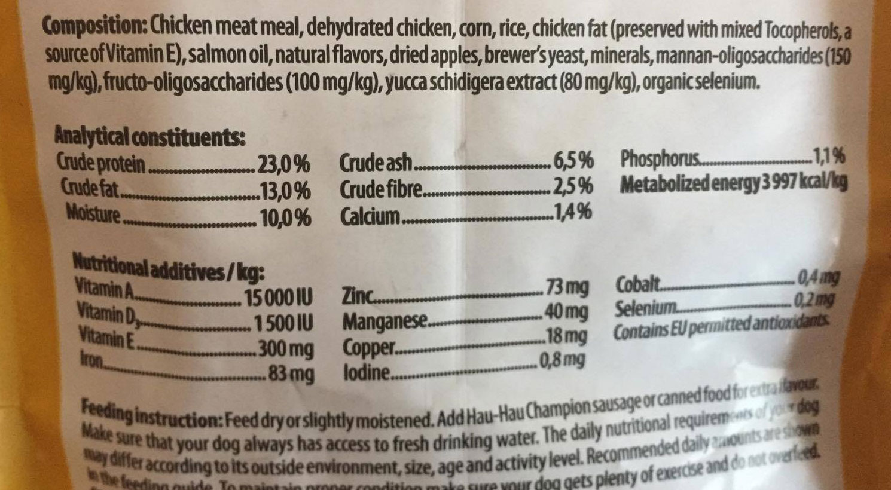

|
A preservative is any ingredient added to a food to slow down spoilage. The preservatives used in pet foods can be grouped into two general types: antimicrobials that block growth of bacteria, moulds or yeasts and antioxidants that slow the oxidation of fats and lipids that leads to rancidity.
Both preservatives and antioxidants can come from natural sources (such as vitamin E and rosemary oil) or be artificially created. Here we will talk only about artificial preservatives and antioxidants. To find out more about natural preservatives and antioxidants in pet food, click here.
Artificial preservatives and antioxidants are far more widespread in pet food than most people imagine and although they certainly work at slowing down decomposition (in some cases giving pet foods a shelf life of over four years!), there are a whole host of concerns regarding their effects on health.
BHA (butylated hydroxyanisole or E320) and BHT (butylated hydroxytoluene or E321) are amongst the most common artificial antioxidants used in pet foods and are particularly worrying. One study at the University of Hamburg concluded that "all published findings agree with the fact that BHA and BHT are tumour promoters"[1] and the Department of Health and Human Studies in the US found that BHA consistently produces tumours in both rats and fish [2]. And the potential side-effects aren't just physical with one study finding a whole host of behavioural problems including increased aggression and "a severe deficit in learning" linked to BHA and BHT consumption in mice [3]. Despite all of the evidence, both BHA and BHT are currently permitted in pet food (and human food) in both the US and in Europe.
Propyl Gallate (E310), an artificial preservative that is often used in conjunction with BHA and BHT, has also been linked with tumour formation in rats [4].
Another common preservative, Potassium Sorbate (E202) is listed as a skin, eye and respiratory irritant, has been shown to damage white blood cells and may also contribute to tumour formation [5].
One piece of good news for European pet owners is that Ethoxyquin or E324 (which was once one of the most widespread artificial antioxidants in pet foods and has a long history of connections with allergic reactions, skin disease, behaviour problems and far worse conditions) was 'suspended' by the European Food Safety Authority in April 2017 on the basis that it may cause damage to DNA and lead to cell mutation [6]. This is, however, just a suspension and not a ban meaning that it could well return in time. Ethoxyquin is still widely used outside of the EU.
As you can see, chemical preservatives include some of the most controversial additives around and since there are good natural alternatives, there really is no justification for their continued use in pet foods.
How to avoid artificial preservatives and antioxidants
Unfortunately, avoiding artificial preservatives and antioxidants isn't easy. Over the years manufacturers have found more and more ways to hide their use of these highly contentious ingredients.
Look beyond the ingredients list
When a pet food manufacturer adds preservatives to its products, they have to be declared on the label. Oddly, though, they don't necessarily have to be listed alongside the other ingredients and can instead be buried within the typical analysis or elsewhere in the 'statutory statement' (the area on the label with all of the legally required info like ingredients, typical analysis, best before date etc) so you do need to keep your eyes peeled.
Word games
Terminology on ingredients list is somewhat of an art form. The law does provide rules for how ingredients should be listed but there is still plenty of wiggle room for manufacturers to add some spin here and there. So rather than simply stating that a food is, for example, 'preserved with BHA, BHT and propyl gallate', which might put off customers, they are much more likely to use far less worrying phrases like 'contains EU permitted antioxidants'. In fact, for some dog owners I have spoken to, 'EU permitted antioxidants' actually conjures images of the kind of good, natural antioxidants that have recently become popular for humans like goji berries and fresh blueberries. As we have established above, when you see antioxidants listed on a pet food and it is not accompanied by the word natural, it is not referring to anything good.

Let's play spot the artificial preservatives!
"No added preservatives"
Unfortunately, even if you find a food with no mention of artificial preservatives or antioxidants anywhere on the label, that's still not a guarantee that the food is free from them.
The sad truth is that it is actually impossible to say from the packaging alone whether some foods might contain artificial preservatives or not. This is because, while additives added by the manufacturers themselves have to be declared on the packaging, there is a legal loophole allowing artificial additives that were added to the ingredients before they reached the pet food factory to go undeclared. In fact, even if a food is littered with ingredients that have been individually treated with artificial preservatives before reaching the factory, the manufacturer can still legally claim that the food has 'no added preservatives' as they technically didn't add any!
Meat meal is a particular problem in this respect as it routinely has artificial preservatives added before it reaches the pet food factories - a fact that very few manufacturers manage to communicate to their customers.
So the only way to be 100% sure if your pet food is completely free from artificial preservatives and antioxidants (including any added by their ingredient suppliers) is to look for foods clearly labelled as free from artificial preservatives or to ask the manufacturer directly.
References
- Toxicology of the synthetic antioxidants BHA and BHT in comparison with the natural antioxidant vitamin E, University of Hamburg, 1993. https://www.ncbi.nlm.nih.gov/pubmed/8493816
- Report on Carcinogens, Fourteenth Edition - Butylated Hydroxyanisole, National Toxicity Program, U.S. Department of Health and Human Studies, 2016. https://ntp.niehs.nih.gov/ntp/roc/content/profiles/butylatedhydroxyanisole.pdf
- The effect of butylated hydroxyanisole and butylated hydroxytoluene on behavioral development of mice, Loyola University, Illinois, 1974. http://www.feingold.org/Research/stokes.html
- Carcinogenesis bioassay of propyl gallate, U.S. Department of Health and Human Services, 1981. https://ntp.niehs.nih.gov/ntp/htdocs/lt_rpts/tr240.pdf
- Does potassium sorbate induce genotoxic or mutagenic effects in lymphocytes?, Toxicology in Vitro, 2009. http://www.sciencedirect.com/science/article/pii/S0887233309003853?via%3Dihub
- Commission Implementing Regulation (EU) 2017/962, 2017. http://eur-lex.europa.eu/legal-content/EN/TXT/?uri=uriserv%3AOJ.L_.2017.145.01.0013.01.ENG
Find foods containing Artificial preservatives and antioxidants See the full Ingredient Glossary
|